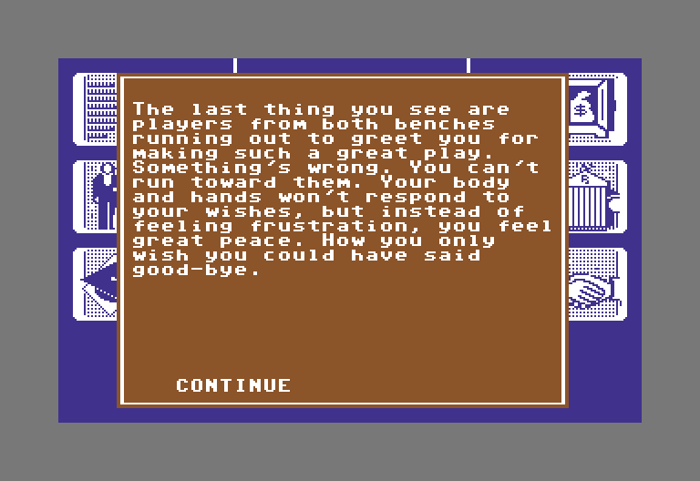
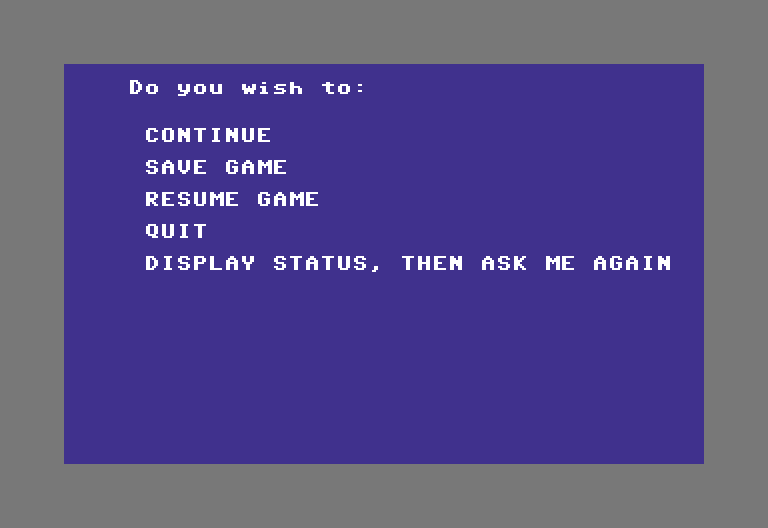
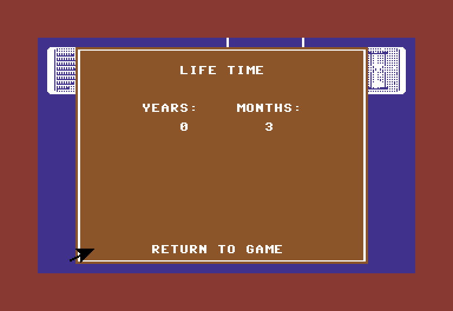
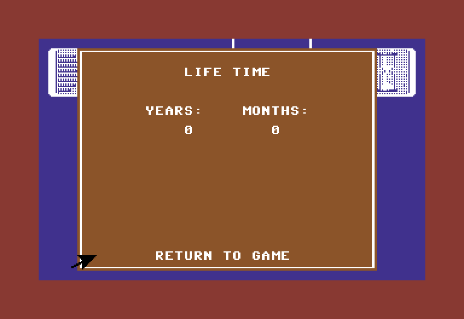
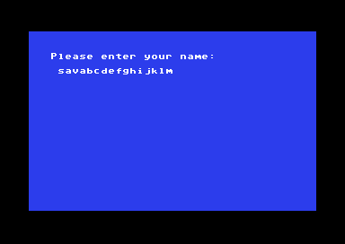

<meta charset="utf-8">
<meta name="viewport" content="width=device-width, initial-scale=1">
<title>Alter Ego</title>
<link rel="preconnect" href="https://fonts.googleapis.com">
<link rel="stylesheet" href="https://fonts.googleapis.com/css2?family=Lato:wght@400;700;900&family=IBM+Plex+Mono:wght@400;500&display=swap">
<style>
:root{
  --bg:#23262d; --paper:#e9e7e1; --surface:#ffffff; --surface-2:#f1efea; --line:#d5d3cc; --line-soft:#e0ded8;
  --ink:#2f3136; --ink-soft:#55585f; --ink-mute:#80838a;
  --link:#1f5fa8; --link-hover:#154480; --accent:#1f5fa8;
  --amber:#c25a00; --cyan:#1f5fa8; --coral:#d04a3a; --green:#2a8a4a; --violet:#4a5bd6; --hl:#fff0c2;
  --chip:#2f3136; --chip-ink:#ffffff;
  --c64blue:#40318d; --c64grey:#686868;
  --fd:'Lato',system-ui,sans-serif; --fb:'Lato',system-ui,sans-serif; --fm:'IBM Plex Mono',ui-monospace,Menlo,monospace;
  --col:1080px; --gx:68px; --fs:17px; --lh:1.6; --hw:900; --h1:46px; --h2:26px; --sy:48px; --pp:26px; --r:10px;
  --plate-shadow:0 1px 2px rgba(0,0,0,.05),0 4px 14px rgba(0,0,0,.05);
}
*{box-sizing:border-box}
html{background:var(--bg);min-height:100%}
body{background:var(--paper);color:var(--ink);font-family:var(--fb);font-size:var(--fs);line-height:var(--lh);max-width:var(--col);margin:0 auto;min-height:100vh;padding:0 0 4rem}
h1,h2,h3{font-weight:var(--hw);letter-spacing:-.01em;text-wrap:balance;color:var(--ink);margin:0}
.wrap{padding:0 var(--gx)}
.hero{padding:48px var(--gx) 8px;text-align:left}
.eyebrow{font-family:var(--fm);font-size:12px;letter-spacing:.08em;text-transform:uppercase;color:var(--ink-mute);margin:0 0 10px}
.hero h1{font-size:var(--h1);line-height:1.15;letter-spacing:-.02em;margin:0 0 14px}
.hero .sub{margin:0 0 .6em;color:var(--ink-soft)}
section{padding:var(--sy) 0 24px}
section:last-of-type{border-bottom:none}
.fig{font-family:var(--fm);font-size:12px;letter-spacing:.08em;text-transform:uppercase;color:var(--ink-mute);margin:0 0 10px}
h2.t{font-size:var(--h2);margin-bottom:12px}
.lede{color:var(--ink-soft);margin:0 0 30px}
.plate{background:var(--surface);border:1px solid var(--line);border-radius:var(--r);padding:var(--pp);box-shadow:var(--plate-shadow)}
.cap{font-size:14px;color:var(--ink-mute);margin-top:14px;line-height:1.55}
.cap b{color:var(--ink);font-weight:700}
code{font-family:var(--fm);font-size:.82em;background:var(--chip);color:var(--chip-ink);border-radius:4px;padding:2px 6px;white-space:nowrap}

</style>

<style>
a{color:var(--link)} a:hover{color:var(--link-hover)}
canvas{display:block;max-width:100%;height:auto;margin:20px auto;background:#16191e;image-rendering:pixelated;border-radius:4px}
label{display:inline-flex;align-items:center;gap:12px;margin:8px 18px 8px 0;flex-wrap:wrap;max-width:100%}
select,input,button{font:inherit;padding:7px;border:1px solid #a7abb2;border-radius:4px;max-width:100%;background:white;color:#252a35}
button{cursor:pointer}button:hover{background:#e4ebf5}input[type=range]{width:190px;accent-color:var(--accent)}
output,.readout{display:block;font:14px/1.6 var(--fm);padding:12px 0;overflow-wrap:anywhere}
.reference{max-width:100%;height:auto;display:block;margin:auto;image-rendering:pixelated}
table{border-collapse:collapse;width:100%;font-size:15px}th,td{text-align:left;padding:9px;border-bottom:1px solid var(--line)}
details{margin:16px 0;padding:12px 16px;background:var(--surface-2);border-radius:6px}summary{cursor:pointer;font-weight:700}
.key{display:inline-block;padding:3px 10px;margin:4px;border-radius:4px;background:#e1e6ed;font-size:14px}
pre{white-space:pre-wrap;overflow-wrap:anywhere;font:13px/1.6 var(--fm);max-height:420px;overflow:auto;background:#16191e;color:#eee;padding:18px}
@media(max-width:650px){:root{--gx:22px;--h1:36px;--sy:32px;--pp:16px}th,td{padding:6px;font-size:13px}}
.shots{display:grid;grid-template-columns:repeat(2,minmax(0,1fr));gap:16px}.shots.three{grid-template-columns:repeat(3,minmax(0,1fr))}.shots figure{margin:0}.shots img{width:100%;height:auto;display:block;image-rendering:pixelated;border-radius:4px}.shots figcaption{font-size:14px;color:var(--ink-mute);margin-top:8px;line-height:1.5}@media(max-width:650px){.shots,.shots.three{grid-template-columns:1fr}}
.scroll{overflow-x:auto}td.n{font-family:var(--fm);text-align:right}
</style><!-- tabs -->
<header class="hero"><p class="eyebrow">Commodore 64 · 1986 · Activision</p><h1>Alter Ego</h1><p class="sub">When Old Age ends, the next life is born with the personality the last one died with. And a saved life comes back from the disk without the months since its last birthday, so it gets those months to live again.</p></header>
<main class="wrap">

<section id="new-life" data-part="life"><p class="fig">01 · Reborn</p><h2 class="t">Secret: after Old Age, the next life is born with the same personality</h2>
<p>When Old Age is over, the game moves on to the phase after the seventh, and that phase is Infancy (<code>finish_life_stage</code>, <code>$8CFF</code>). The new life starts in the womb, as every life does, but the twelve traits are the ones the old life ended with, and the name stays too. The game clears everything else about the old life: the job, the money and the debt, the age, the possessions and the flags its scenes set (the 88 bytes from <code>$7F58</code>, the numbers 12 to 55).</p>
<div class="shots three"><figure><figcaption>The last scene of a life, at 70.</figcaption></figure><figure><figcaption>The menu that ends every phase.</figcaption></figure><figure><figcaption>The next life's first page, the border back to Infancy's red.</figcaption></figure></div>
<div class="plate scroll"><table><thead><tr><th>Trait</th><th>At 70, in Old Age</th><th>Newborn</th></tr></thead><tbody>
<tr><td>Calmness</td><td class="n">12</td><td class="n">12</td></tr><tr><td>Confidence</td><td class="n">43</td><td class="n">43</td></tr><tr><td>Expressiveness</td><td class="n">49</td><td class="n">49</td></tr><tr><td>Familial</td><td class="n">50</td><td class="n">50</td></tr><tr><td>Gentleness</td><td class="n">7</td><td class="n">7</td></tr><tr><td>Happiness</td><td class="n">25</td><td class="n">25</td></tr><tr><td>Intelligence</td><td class="n">50</td><td class="n">50</td></tr><tr><td>Physical</td><td class="n">45</td><td class="n">45</td></tr><tr><td>Social</td><td class="n">80</td><td class="n">80</td></tr><tr><td>Thoughtfulness</td><td class="n">5</td><td class="n">5</td></tr><tr><td>Trustworthiness</td><td class="n">28</td><td class="n">28</td></tr><tr><td>Vocational</td><td class="n">50</td><td class="n">50</td></tr>
</tbody></table><p class="cap">The original program on the kit's C64, Old Age chosen at the start and then played with keys pressed at random. The life ended at the age of 70. At the menu the keys picked SAVE GAME and then Cancel, and the new life began anyway: the game has already moved the phase on before it acts on the menu's answer. The traits are the twelve numbers at <code>$7F40</code>, read as the last scene began and again on the new life's first page.</p></div>
<p>The new life is not quite a clean slate in one more way. The four bytes at <code>$7FC0</code> record which scenes of the lifelong choices have been played, one bit each, and the new life starts with them set to <code>00 00 70 2A</code>: six scenes already marked as played. A life can also end before Old Age, when a scene ends with the value 253; the game then sets the phase to 7 and ends it, so that the same rebirth follows (<code>play_life_map_cell</code>, <code>$8A85</code>).</p>
</section>

<section id="months" data-part="main"><p class="fig">02 · Saving</p><h2 class="t">Bug: a resumed life loses the months since its last birthday</h2>
<p>The age is kept in two parts: whole years at <code>$7F74</code>, and the fraction of a year since the last birthday at <code>$7FC4</code>, which the scenes add to and the LIFE TIME screen shows as months. A save holds seven stretches of memory (<code>transfer_save_slot_state</code>, <code>$4E0F</code>), and the fraction is not one of them. A life resumed after a fresh start comes back at its birthday, with 0 months.</p>
<div class="shots"><figure><figcaption>Before saving: 0 years and 3 months.</figcaption></figure><figure><figcaption>The same life resumed: 0 years and 0 months.</figcaption></figure></div>
<p class="cap">The original program on the kit's C64: Infancy played from a new game until a scene moved the fraction to <code>$4703</code>, three months, then saved in the first place and quit. The machine was started again and the life resumed from the title's menu.</p>
<p>The lost months come back as time to live. The years move on only as scenes are played, and a phase ends when the age passes its last year, so a life saved just before a birthday and resumed lives almost all of that year again, with scenes to fill it. A life resumed from the menu without starting afresh takes the fraction of whatever life was being played before.</p>
</section>

<section id="allocation" data-part="main"><p class="fig">03 · Memory</p><h2 class="t">Bug: the memory allocator says yes to a request so large that the sum wraps round</h2>
<p>The game keeps loaded objects in a heap that grows upwards from <span data-part=""><code>$8465</code></span>, while the program's stack grows down towards it. The allocator adds the size asked for to the heap's 16-bit pointer and refuses only when the end would come within 256 bytes of the stack (<code>AllocateVmHeapBlock</code>, <code>$6E70</code>). The sum wraps round at 65,536, so a request large enough to pass the top of memory gives a small end, which passes the test, and the heap's pointer moves backwards. The game never asks for that much. Try a size against the heap at <span data-part=""><code>$C465</code></span> and the stack at <span data-part=""><code>$CDF6</code></span>.</p><div class="plate"><label>Bytes asked for <input id="heap-size" type="number" min="0" max="65535" value="2193"></label><p><button id="heap-limit" type="button">Up to the guard</button> <button id="heap-over" type="button">One byte more</button> <button id="heap-wrap" type="button">Wrap round to zero</button></p><output id="heap-result"></output><p class="cap">The limit is the stack's address less 256, <span data-part=""><code>$CCF6</code></span>. The game's own routine, given these sizes on their own, accepts 2,193 bytes, refuses 2,194, and accepts 15,259, which leaves the pointer at 0.</p></div>
</section>

<section id="name" data-part="main"><p class="fig">04 · Name</p><h2 class="t">Secret: the name takes sixteen letters and ignores any more</h2><div class="plate"><p class="cap">The name is kept in 16 bytes at <code>$82CB</code> (<code>EditMenuTextOrSelectEntry</code>, <code>$511C</code>). Letters typed unshifted are stored in lower case and shifted ones in upper case, and DEL takes the last one off. Once the sixteenth is in, further letters change nothing, and RETURN accepts the name. A name of 16 letters fills the field with no end marker after it, and every place that shows the name copies at most 16 bytes, so it shows whole.</p></div></section>
</main>
<script>

function calculateHeap(size){const heap=0xC465,guard=0xCCF6,end=(heap+size)&65535,accepted=end<=guard;return {end,accepted,newHeap:accepted?end:heap};}
function renderHeap(){const input=document.getElementById('heap-size'),size=Math.max(0,Math.min(65535,Math.trunc(Number(input.value)||0))),v=calculateHeap(size),hex=n=>'$'+n.toString(16).toUpperCase().padStart(4,'0');document.getElementById('heap-result').textContent=`${size} bytes: end ${hex(v.end)}. ${v.accepted?'Accepted':'Rejected'}; next heap ${hex(v.newHeap)}.${0xC465+size>65535?' The address addition wrapped.':''}`;}
document.getElementById('heap-size').addEventListener('input',renderHeap);for(const [id,size]of [['heap-limit',2193],['heap-over',2194],['heap-wrap',15259]])document.getElementById(id).addEventListener('click',()=>{document.getElementById('heap-size').value=size;renderHeap();});renderHeap();
</script>
